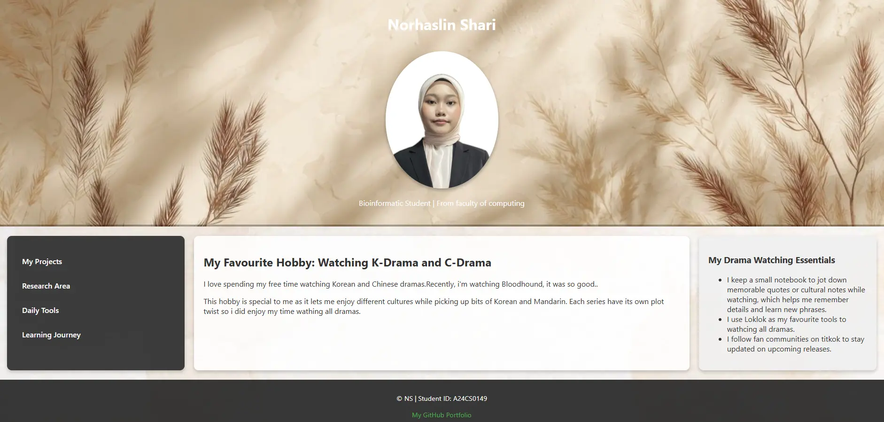
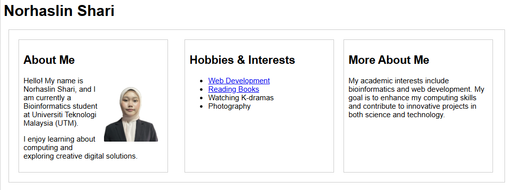

My Projects

HTML & CSS Lab Test 1
Develop a personalized webpage that is customized based on the given instructions.

HTML & CSS Lab Test 2
Create a personal webpage using HTML and CSS. Then, modify the webpage follows what the instructions want.